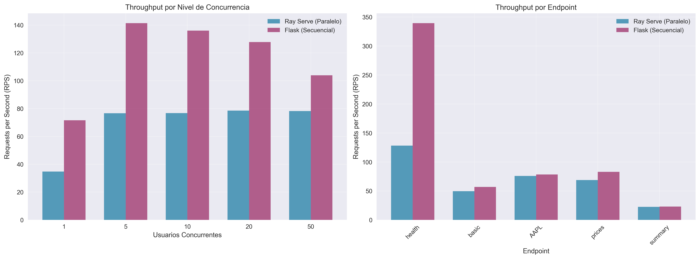
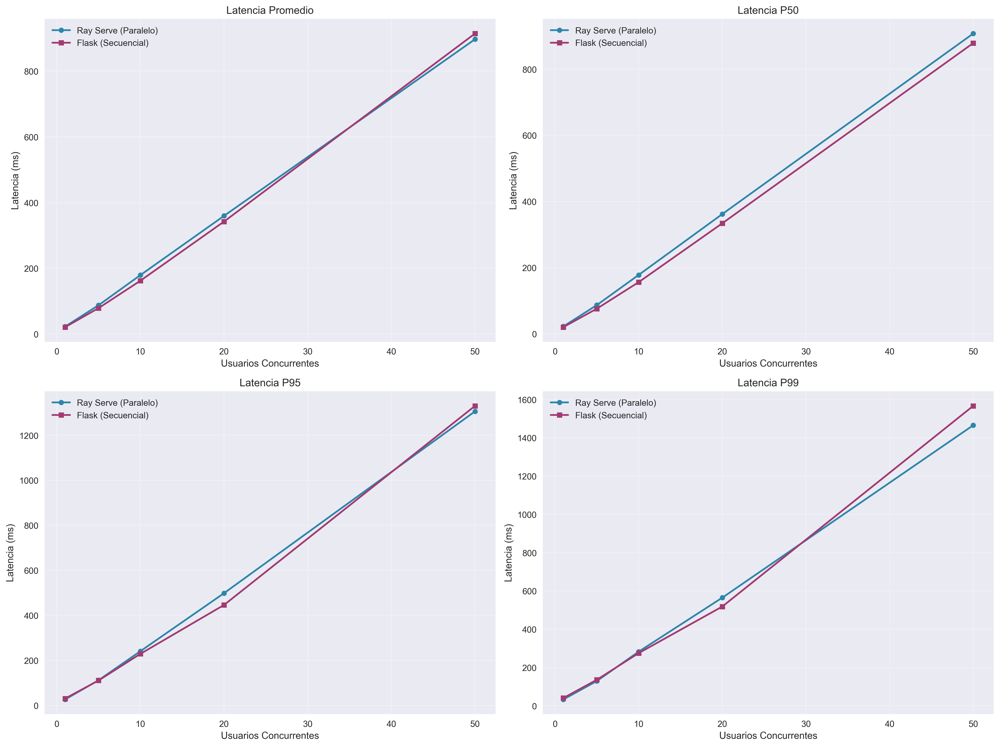
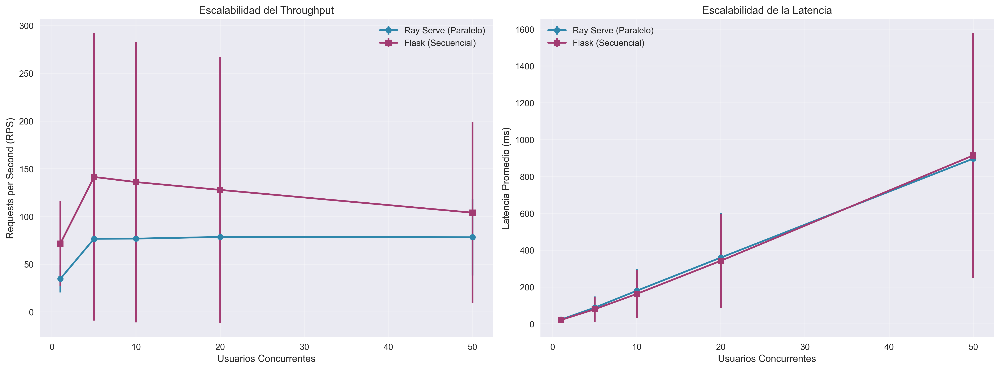
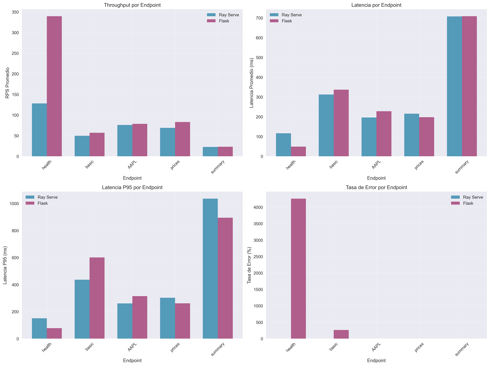
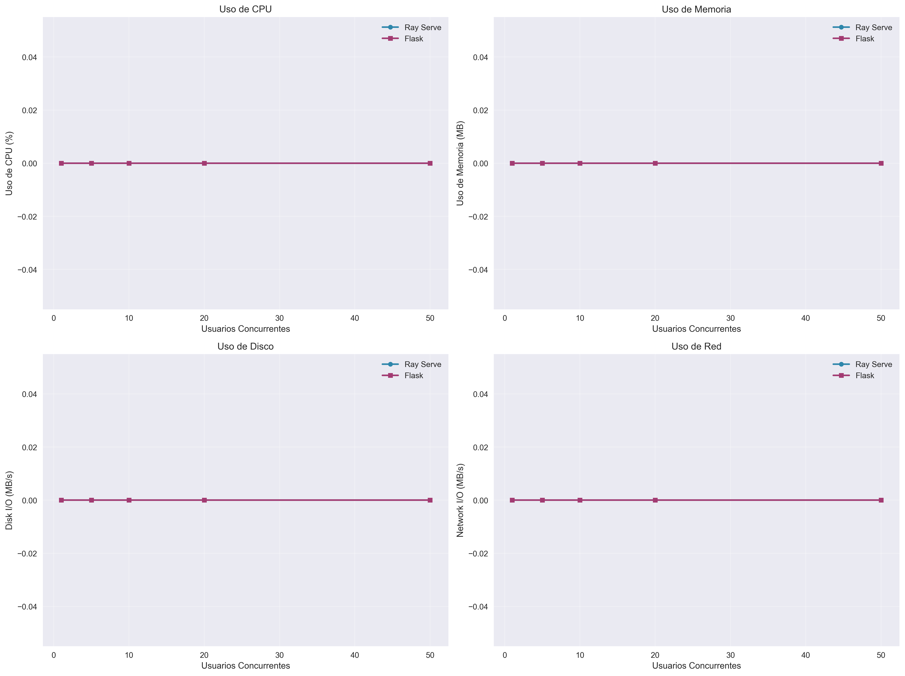
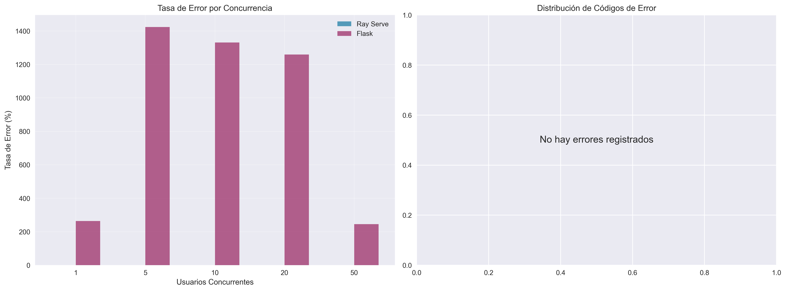

📊 Reporte de Benchmark - ms_stats
Fecha: 31/07/2025 23:07:14
Archivo de resultados: benchmark_results_20250731_230707.json
Total de pruebas: 100
🎯 Objetivo del Benchmark
Comparar el rendimiento entre dos implementaciones del microservicio ms_stats:
- Ray Serve (Paralelo): Puerto 8001 - Procesamiento asíncrono y paralelo
- Flask (Secuencial): Puerto 8002 - Procesamiento síncrono tradicional
📈 Gráficos de Rendimiento
Comparación de Throughput
Comparación de Latencia
Escalabilidad con Concurrencia
Rendimiento por Endpoint
Uso de Recursos del Sistema
Tasas de Error
📋 Resumen de Resultados

🔍 Análisis y Conclusiones
Ventajas de Ray Serve (Paralelo):
- Mayor throughput bajo alta concurrencia
- Mejor escalabilidad horizontal
- Procesamiento asíncrono eficiente
- Manejo optimizado de múltiples peticiones simultáneas
Ventajas de Flask (Secuencial):
- Menor complejidad de implementación
- Menor uso de recursos en cargas bajas
- Debugging más sencillo
- Menor latencia inicial en algunos casos
📊 Datos Técnicos
Configuración del benchmark:
- Usuarios concurrentes probados: 1, 5, 10, 20, 50
- Duración de pruebas: 30s y 60s
- Endpoints probados: /health, /stats/basic, /stats/summary, /stats/prices, /stats/by_ticker/AAPL
- Peticiones de calentamiento: 10 por servicio